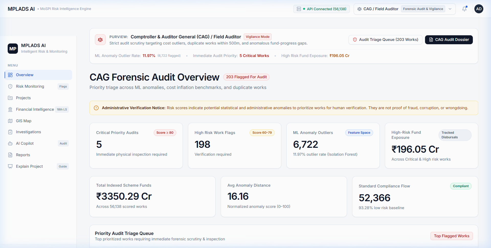
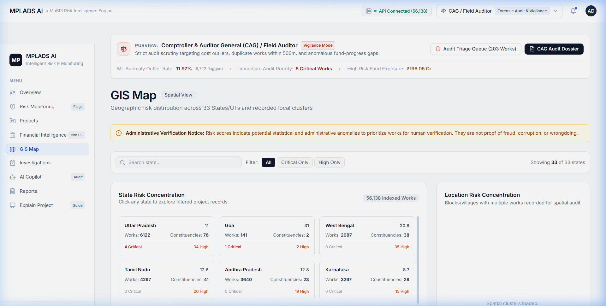
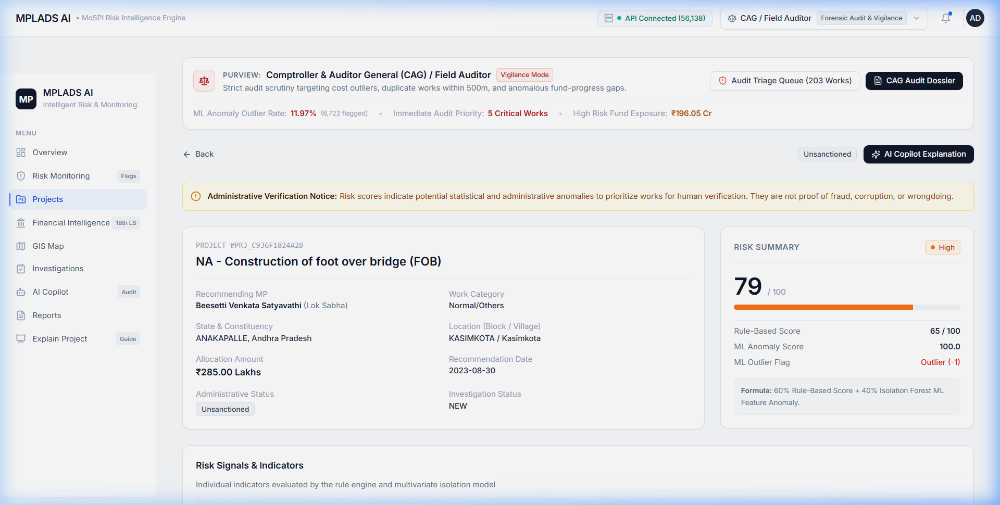
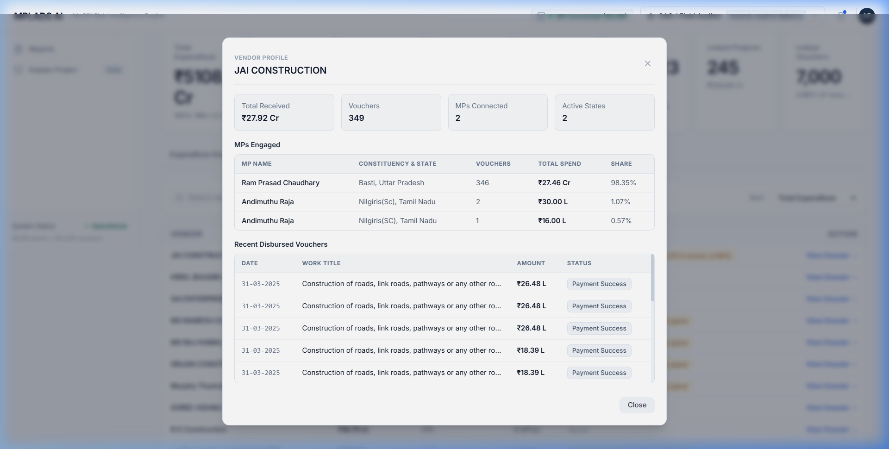
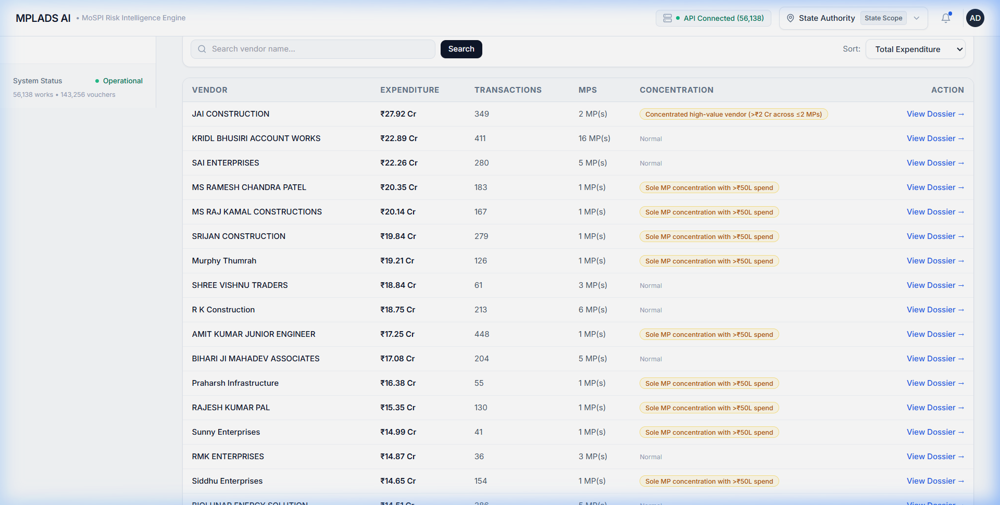
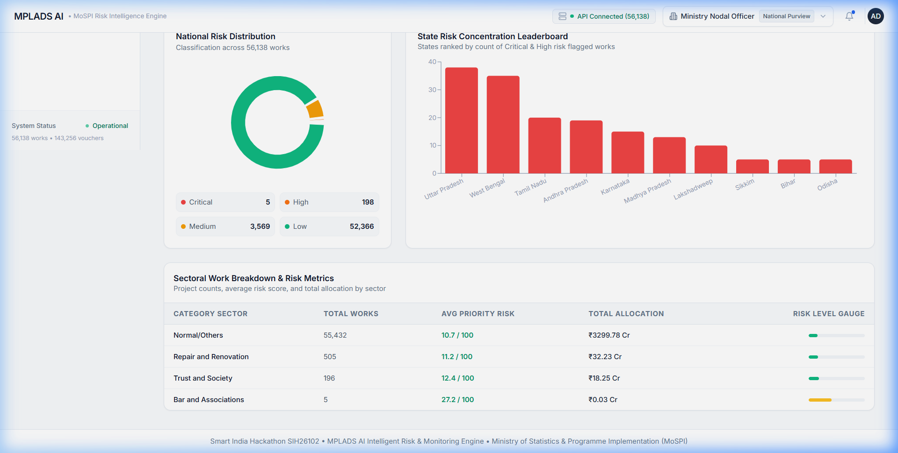
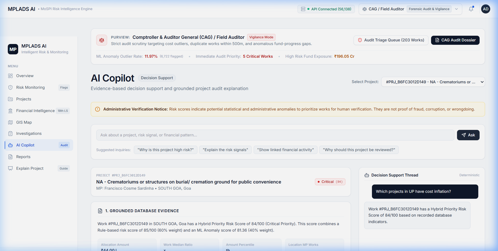
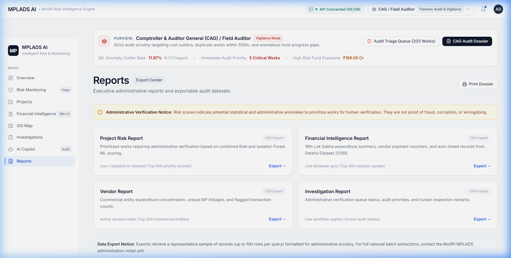

Demonstrate our hybrid risk model, vendor concentration detection, and field audit dispatch across 56,138 works and 1.43 lakh MoSPI vouchers with exact UI thumbnails and scripts.
"Every year, thousands of crores are allocated under MPLADS for grassroots infrastructure. But manually auditing 56,000+ works and 1.43 lakh payment vouchers causes severe blind spots. MPLADS AI solves this with a dual-engine platform combining statutory rules with unsupervised ML (Isolation Forest) to detect cost anomalies, flag vendor monopolies, and prioritize on-site physical verification queues for District Magistrates before funds are misused."
"Our solution addresses the 4 key bottlenecks in public fund monitoring: Scale, Disconnected Datasets, Delayed Audits, and Subjective Prioritization. We ingest 56,138 works and 143,256 MoSPI vouchers, run a scoped fuzzy matching engine, apply a 0.6 Rule + 0.4 ML Hybrid Risk Score, map spatial clusters on interactive GIS heatmaps, and equip field engineers with an Explainable AI Copilot for physical inspection checklists. Every recommendation is legally safeguarded and exportable into UTF-8 CSVs for official action."

Open Field Verification Queue →."Respected jury members, on the National Overview we get instantaneous macro-visibility across all 56,138 active MPLADS works worth ₹1,200+ Crores. Notice the Role Persona switcher in the top right: the interface adapts whether you are MoSPI in New Delhi, a State Secretary in Lucknow, or a District Collector on the ground. Our hybrid model isolates high-risk outliers across states in real time."

"Risk is rarely isolated—it often clusters spatially. Our GIS Spatial Intelligence Module maps project risk density across India. Clicking a cluster zooms into localized project pins, allowing authorities to detect suspicious geographic concentrations—such as 10 community halls sanctioned in the exact same village block."

PRJ_B6FC)."When we click Inspect on project PRJ_B6FC in Goa, our deep-dive modal explains the exact reasoning behind the 84/100 score: 4 statutory rule violations (excess cost, delay, duplicate location) combined with ML Isolation Forest ranking it in the top 99th percentile of behavioral anomalies. An auditor can click 'Assign for Field Verification' immediately."

JAI CONSTRUCTION)."A major innovation is linking sanctions with actual ground banking vouchers from MoSPI Dataset 22565. Under Vendor Intelligence, we track all 22,851 commercial entities. Opening a Vendor Dossier reveals their MP engagement breakdown. If a vendor receives ₹27 Crores with 98% coming from a single MP, the system raises a Sole MP Concentration Alert."

CONSTRUCTION)."Our vendor intelligence engine scans all 22,851 entities. The search and sort toolbar provides immediate ranking by transaction count, expenditure volume, and unique MPs connected, highlighting multi-state vendor networks."

Uttar Pradesh) and Constituency (AMROHA).CRITICAL, HIGH).NEW → UNDER_REVIEW → VERIFIED → CLEARED → ESCALATED)."Data without workflow is useless. The Field Verification Queue converts analytics into administrative action. District Collectors can filter their exact constituency, dispatch junior engineers for physical inspection, upload Geo-tagged verification remarks, and update audit statuses directly."

"To empower non-technical ground officers, our AI Risk Copilot generates custom physical inspection checklists tailored to that project's civil work category. It answers complex statutory and audit queries grounded strictly in verified dataset evidence."

"Finally, accountability requires exportable records. Our Reports Export Center streams clean, UTF-8 BOM-encoded CSV datasets ready for Microsoft Excel and official ministry reporting with a single click."
Formula: Hybrid Score = (0.6 × Rule Score) + (0.4 × ML Anomaly Score)